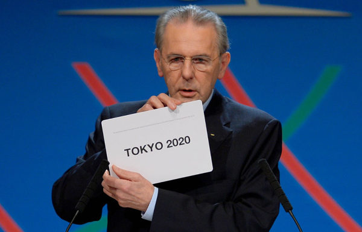

Tokyo 2020
As Olimpíadas de 2020 serão realizadas em Tóquio, no Japão, de 24 de julho a 9 de agosto de 2020. Em sua 32ª edição, os Jogos Olímpicos de Verão terão 33 modalidades esportivas, com a expectativa de participação de mais de 11 mil atletas, os quais representarão mais de 204 países.
Essa é a segunda vez que Tóquio recebe os Jogos Olímpicos Modernos a primeira vez foi em 1964, o que tornou a capital japonesa a ser a primeira cidade asiática a sediar duas vezes as Olimpíadas.
Quando foi anunciada como sede?
Tóquio foi anunciada oficialmente como sede das Olimpíadas de 2020 na cerimônia de encerramento dos Jogos Olímpicos do Rio de Janeiro, em 2016, data em que começou a contagem regressiva para a 32ª edição da competição. A estimativa orçamentária oficial do Comitê Olímpico de Tóquio foi de 12,6 bilhões de dólares para a realização dos jogos. Além desse valor, o governo anunciou o investimento de 7,5 bilhões de dólares.

Esportes e Modalidades
As Olimpíadas de Tóquio de 2020 contarão com 33 esportes a serem disputados por mais de 11 mil atletas. Algumas modalidades esportivas têm diferentes categorias de competição, como os esportes aquáticos e o atletismo.


Novidades
| Novas Modalidades |
|---|
| Surf |
| Escalada |
| Skate |
| Beisebol/Softbol |
Visite para informações do Emblema e do Escudo
VEJA AQUI UM MAPA DE TÓQUIO: